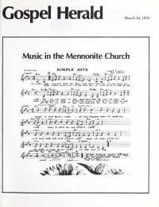

CMnexus
: Contemporary Christian culture, music, and media.
|
Gospel Herald30 Mar 1976, vol. 69, iss. 13
| Cover |
|---|
|  | | Writers in this Issue |
|---|
Lois Barrett
Larry Kehler
Peter Letkemann
Lloyd Mackey
Mary K. Oyer
Randy Zercher
|
Music in the Mennonite ChurchArticle:
- "Reflections of a Church Musician" by Mary K. Oyer
- "Religious Folk, Rock, or Whatever You Call It" by Randy Zercher
- "Singing in the Mennonite and Brethren in Christ Experience" by Peter Letkemann
Music Makers for the Church:
- Esther Wiebe by Larry Kehler
- Tom Graff by Lloyd Mackey
- Barbara Sowell by Lois Barrett
|
|